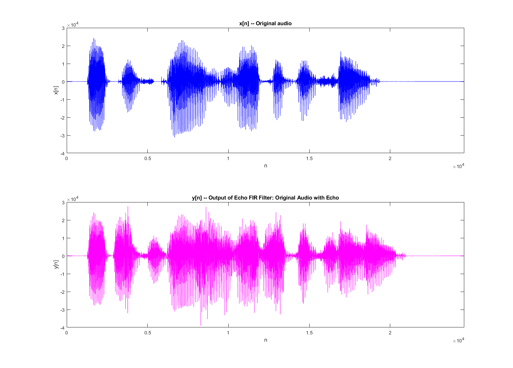
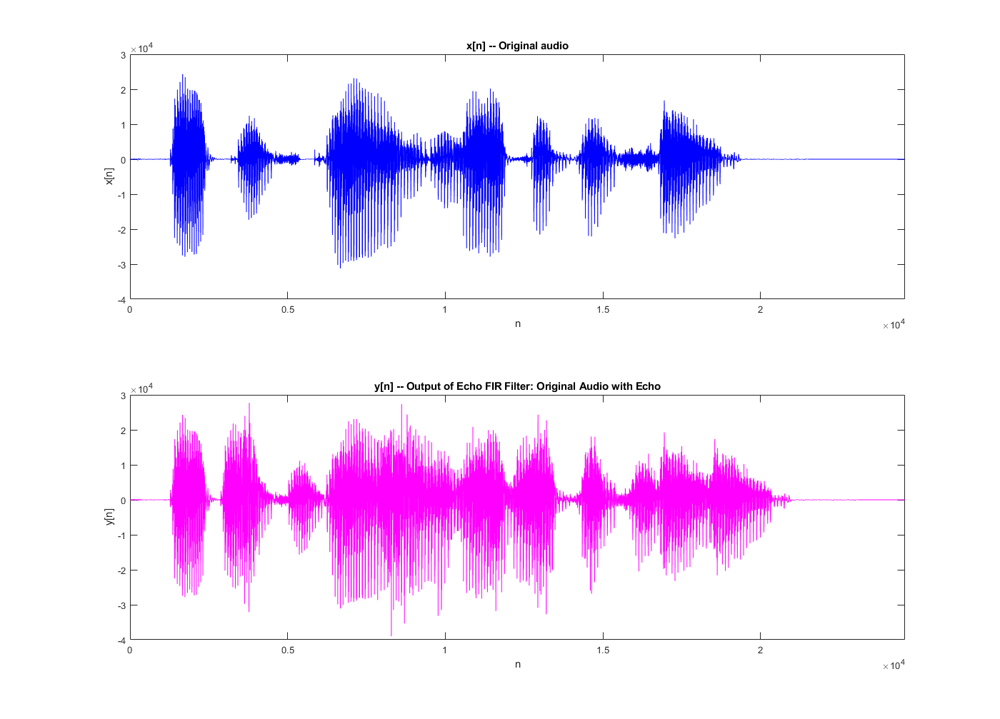

Lab P-9: 3 Lab Exercise
Contents
3)
FIR Filters Objectives: 1. Echo: Study how echos ("ghosts" in images) can be produced by FIR filters. 2. Deconvolution: Study how a FIR filter can (mostly) undo the effects of another by creating cascading two FIR filters. This process is deconvolution.
3.1)
Implement w[n] = x[n]-0.9x[n-1] using the firfilt() function.
% Clear all previous data for the script. clear; close all; clf; % Source toolbox for the script. spfirst; % Given x[n] as the variable xx below. xx = 256*(rem(0:100,50)<10); % Seeing w[n] = x[n]-0.9x[n-1] = x[n]*h[n], where h[n] = d[n]-0.9d[n-1] % (d[n] denotes the delta/impulse function). It can be seen that b_{0} = 1 % and b_{1} = -0.9. % b_{k} coefficients for the FIR filter. bb = [1 -0.9]; % FIR filter function ww = firfilt(bb, xx);
3.1a)
% Time indices for xx in range of 1 (starting index in matlab) to length of % xx (variable x[n]). nn_xx = 1:length(xx); % Time indices for ww in range of 1 (starting index in matlab) to length of % ww (variable w[n]). nn_ww = 1:length(ww); % Plot subplots of x[n] and w[n] onto one figure (figure 1). Use xlim to % restrict the horizontal axis to the range 0 <= n <= 75. figure(1); set(gcf, 'Position', [100, 100, 1400, 1200]); % Enlargen for HTML file. subplot(2,1,1); stem(nn_xx,xx(nn_xx)); title('x[n] -- Input to FIR Filter'); xlim([0 75]); xlabel('n') ylabel('x[n]') subplot(2,1,2); stem(nn_ww,ww(nn_ww),'filled'); %--Make black dots title('w[n] -- Output of FIR Filter'); xlim([0 75]); xlabel('n') ylabel('w[n]') % The effect of the filter coefficients is that high frequencies are % allowed to pass. It takes current value (x[n]) and minuses the previous % value (x[n-1]) scaled by 0.9 (0.9*x[n-1]). As seen in the above plot % there is an outlier every n = 1 + 50 indices where w[n] will equal 256 % and every n = 11 + 50 indices where w[n] will equal -230.4. This is a % high-pass first-order FIR filter.
3.1b)
% w[n] is length: ww_len = length(ww); disp(ww_len); % x[n] is length: xx_len = length(xx); disp(xx_len); % FIR filter coefficients (vector bb) is length: bb_len = length(bb); disp(bb_len); % As stated in section 1.2 of the Lab P-9 manual the length of a FIR filter % output using firfilt() will be: % length(firfilt_output) = length(firfilt_input) + length(firfilt_coefficients) - 1 % Below is a boolean check to prove this computation: display(ww_len == (xx_len + bb_len - 1));
102
101
2
logical
1
3.1.1)
A FIR filter can also be used to restore signals. y[n] = the summation of r^(l)*w[n-l] for l = 0 to M, is a restoration filter that will be explored in this section. Specifically r = 0.9 and M = 22.
3.1.1a)
% Given variables r = 0.9; M = 44; l = 0:M; % In this case r^(l) for zero to M are the coefficients of the FIR filter. cc = r.^l; % Restoration FIR filter output yy = firfilt(cc, ww);
3.1.1b)
% Time indices for yy in range of 1 (starting index in matlab) to length of % yy (variable y[n]). nn_yy = 1:length(yy); % Time indices for ww in range of 1 (starting index in matlab) to length of % ww (variable w[n]). nn_ww = 1:length(ww); figure(2); set(gcf, 'Position', [100, 100, 1400, 1200]); % Enlargen for HTML file. subplot(2,1,1); stem(nn_ww,ww(nn_ww)); title('w[n] -- Input to Restoration FIR Filter'); xlim([0 75]); xlabel('n') ylabel('w[n]') subplot(2,1,2); stem(nn_yy,yy(nn_yy),'filled'); %--Make black dots title('y[n] -- Output of FIR Filter'); xlim([0 75]); xlabel('n') ylabel('y[n]')
3.1.1c)
% Plot the difference between y[n] (mostly restored x[n]) and x[n]. Get the % difference in the range 0 <= n < 50. n = 1:51; error = xx(n) - yy(n); figure(3); set(gcf, 'Position', [100, 100, 1400, 1200]); % Enlargen for HTML file. %subplot(2,1,1); stem(n,error(n)); title('Error (difference) between Original Signal x[n] and Restored Signal y[n]'); %xlim([0 75]); xlabel('n') ylabel('Error')
3.1.2)
This section evaluates the worst-case error.
3.1.2a)
% The maximum error between y[n] and x[n] is:
disp(max(error));
2.2344
3.1.2b)
The maximum error and the plot of the error indicate this y[n] a suboptimal restoration of x[n]. Maximum of the error is ~22.68, meaning y[n] equals ~22.68 when x[n] = 0. Paired with a Mean Average Percent Error is 4.4488.
% Average error
avg_error = mean(error);
disp(avg_error);
0.2629
3.1.3)
This section develops a FIR filter to be an echo filter. y[n] = x1[n]+rx1[n-P]
3.1.3a)
Given an audio signal sampled at frequency fs = 8k Hz make an echo by adding a delayed version to the original. The time delay of the echo should be 0.2 seconds, and the strength should be 90\% of the original. Determine the values r and P (P should be an integer).
% Given sample frequency fs = 8000; % r should scale so x1 is 90% of its full amplitude. r = 0.9; % We know the sample rate fs is 8k Hz and P should make it a time delay of % 0.2 seconds. P = 0.2 * fs; % P is: disp(P);
1600
3.1.3b)
The coefficients for this FIR filter are: h[n] = 1 for n = 0, 0.9 for n = P, and 0 otherwise.
% Coefficients
h = zeros(1, P+1);
h(1) = 1;
h(P+1) = r;
3.1.3c)
Use FIR filter to create an echo using lab data for a speech waveform. Play to prove that the FIR filter produces an echo.
% Load the data (use x2). load labdat; % Apply the filter for the echo y = firfilt(h, x2); % Listen to the origin %sound(x2, fs); % Listen to the echo version sound(y, fs); % Time in seconds for x2 plot t_x2 = 1:length(x2); % Time in seconds for y plot t_y = 1:length(y); figure(4); set(gcf, 'Position', [100, 100, 1400, 1200]); % Enlargen for HTML file. subplot(2,1,1); plot(t_x2,x2, 'blue'); title('x[n] -- Original audio'); xlim([0 max(t_x2)]); xlabel('n') ylabel('x[n]') subplot(2,1,2); plot(t_y,y,'magenta'); title('y[n] -- Output of Echo FIR Filter: Original Audio with Echo'); xlim([0 max(t_x2)]); xlabel('n') ylabel('y[n]')
 
